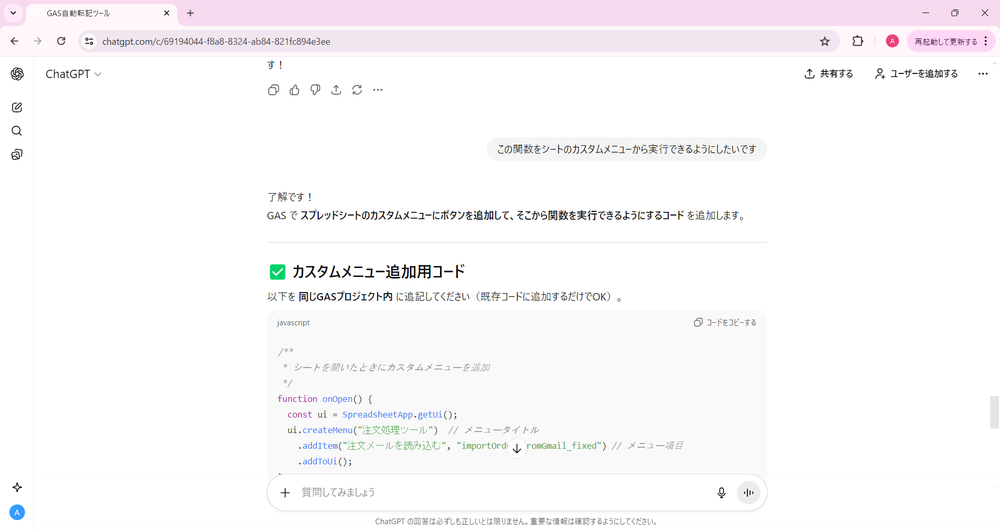
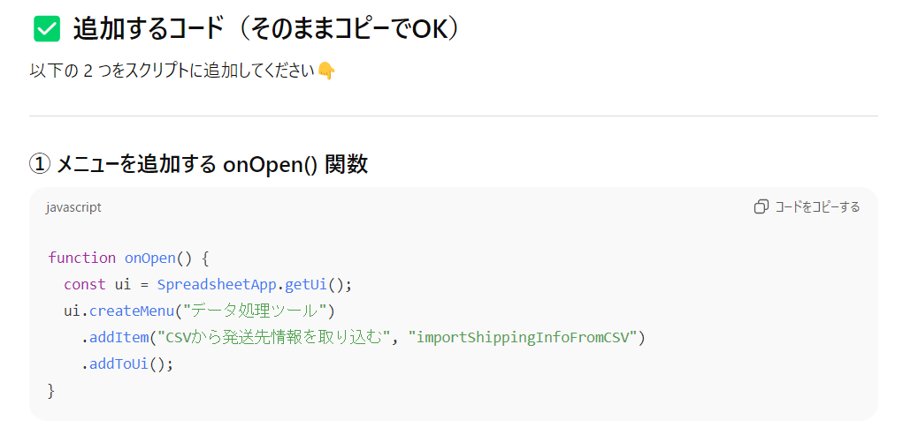
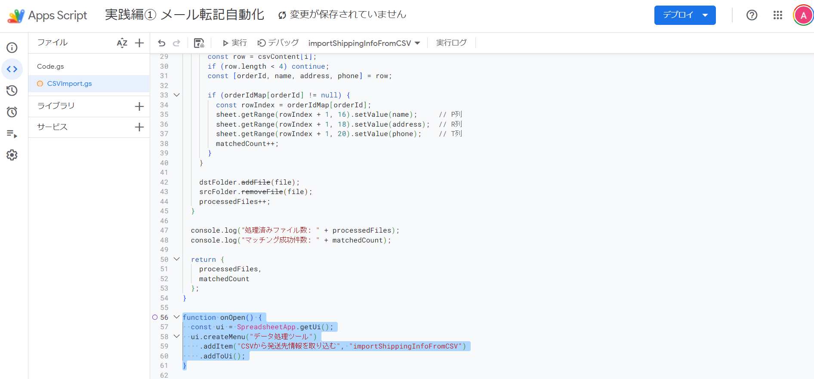

カスタムメニュー設定
ツールが正しく動作することを確認したら、カスタムメニューを追加して使いやすくしましょう
🤖 生成AIに追加指示を送る
それでは、先ほど使ったChatGPTのチャット（ステップ2で使ったチャット）を開きましょう。
同じチャットで会話を続けることで、生成AIは既に作成した関数の内容を理解しているため、 簡単な一言を追加するだけで、カスタムメニューのコードを作成してくれます。
追加で送る指示
ChatGPTに以下のように伝えましょう：
「この関数をシートのカスタムメニューから実行できるようにしたいです」
💡 なぜこれだけで済むの？
同じチャットで会話を続けることで、生成AIは以下の情報を覚えています：
- 既に作成した関数の名前と機能
- どんな処理を行うツールなのか
- どのように動作するのか
そのため、詳しいプロンプトを書かなくても、文脈を理解して適切なコードを作成してくれます。

✅ 生成AIの回答例
ChatGPTは、onOpen関数を含むコードを作成してくれます。
この関数は、スプレッドシートを開いたときに自動的に実行され、カスタムメニューを追加する役割を持っています。
生成されたコードをコピーして、次のステップでGASエディタに貼り付けましょう。
📋 コードをGASエディタに貼り付け
1️⃣ 生成されたコードをコピー
ChatGPTが生成したonOpen関数のコードをコピーします。
コードブロックの右上にある「コピー」アイコンをクリックすると、簡単にコピーできます。

2️⃣ GASエディタに貼り付け
スクリプトエディタを開き、既存のコードの下に貼り付けます。
⚠️ 注意
既存のコードを削除せず、追加で貼り付けるようにしましょう。
既に作成した関数の下に、onOpen関数を追加するイメージです。

3️⃣ 保存する
コードを貼り付けたら、保存ボタン（💾アイコン）をクリックして保存しましょう。
✅ 保存完了
これで、カスタムメニューのコードが追加されました。 次は、実際にカスタムメニューが表示されるか確認しましょう。
🎉 カスタムメニュー設定完了！
カスタムメニューの設定が完了しました。 これで、好きなタイミングでボタン1つで発送情報を追加できます。 次は、このツールのメリットと活用方法を確認しましょう。
次へ：メリット →